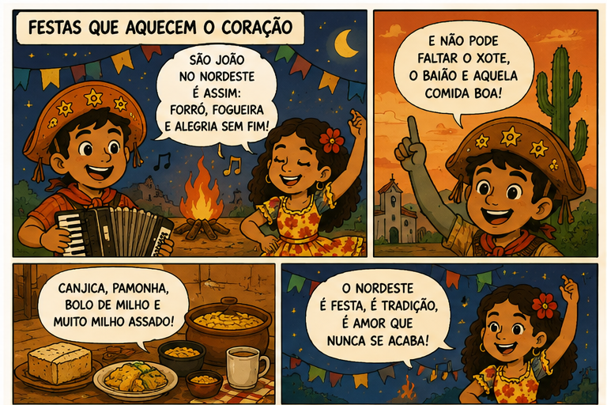
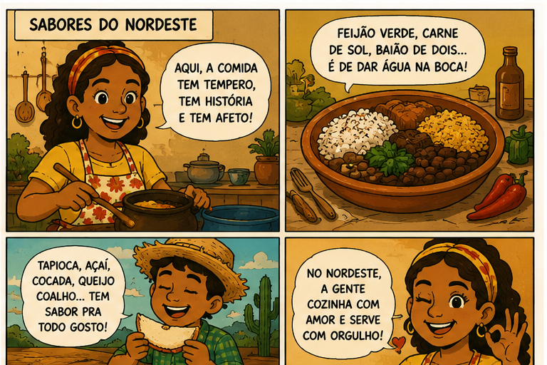

Um portal digital com sotaque, cor e identidade regional
Projeto desenvolvido por: Ana Julia, Christian e Giovana 3A
Projeto desenvolvido por: Ana Julia, Christian e Giovana 3A
Carregando previsão...
Carregando cotações...
Conteúdo fictício para wireframe. A estrutura já está pronta para receber notícias reais depois.
O Nordeste é formado por 9 estados segundo a divisão regional do IBGE, e algumas expressões culturais da região, como o cordel e as matrizes tradicionais do forró, são reconhecidas como Patrimônio Cultural do Brasil pelo Iphan.
O Nordeste é a região brasileira com o maior número de estados: Alagoas, Bahia, Ceará, Maranhão, Paraíba, Pernambuco, Piauí, Rio Grande do Norte e Sergipe.
A literatura de cordel é uma das expressões mais marcantes da cultura nordestina. Seus versos populares contam histórias, críticas sociais, causos, humor e tradições do povo.
O forró é muito mais que um ritmo musical. Ele reúne dança, festa, sanfona, zabumba, triângulo e memória afetiva, sendo uma das manifestações mais conhecidas do Nordeste.
A culinária nordestina mistura tradição, afeto e história. Pratos como cuscuz, tapioca, acarajé, baião de dois, carne de sol e bolo de milho são símbolos regionais.
Tirinhas autorais criadas para o projeto, representando festas, sabores, identidade e belezas naturais do Nordeste.

Representa o São João nordestino, o forró, a fogueira, as comidas típicas e a alegria das festas populares.

Valoriza a culinária regional, destacando pratos típicos, temperos, afeto e tradição na cozinha nordestina.

Mostra a força, a resistência, o cordel, o trabalho e o orgulho de ser nordestino.

Apresenta o litoral, as paisagens naturais, a história e os cenários que fazem parte da identidade nordestina.